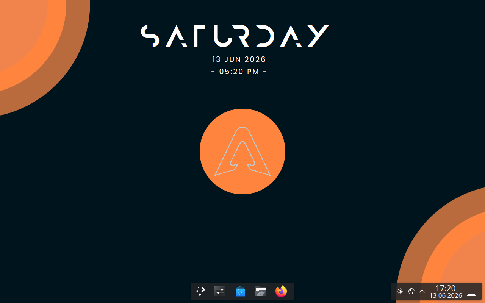

Arch Linux · Rolling Release · Open Source
A modern Arch-based Linux distribution with a custom installer and a focus on elegance, performance, and control.

What you get
Everything Arch offers, with the rough edges smoothed out.
Full access to the Arch ecosystem and AUR. Always up to date, never reinstall.
Modified Linexin Installer redesigned for clarity and speed. Get up and running in minutes.
No bloat, no compromises. Only what you need. Every package has a reason to be there.
Why ArqOS?
A refined Arch experience with a modern installation flow that doesn't get in your way.
User control, transparency, and performance first. You own your system.
Power users, developers, and Arch enthusiasts who want a head start without losing control.
Installation
ArqOS uses a customized version of the Linexin Installer originally created by Linexy, redesigned for clarity, speed, and consistency. UEFI and legacy BIOS are both supported.